הקואופ הוא אלטרנטיבה קהילתית הוגנת בשוק תחרותי ומנוכר. זוהי התאגדות של אנשים למטרות צריכה ויצירה. בעלי ה"קואופרטיב" הצרכני שלנו הם החברים עצמם. לכל חבר יש מנייה, המקנה לו חלק בבעלות על הקואופ. את המוצרים אנו קונים ישירות מהיצרנים ומהספקים, וחוסכים בכך את פער התיווך הקמעונאי.מכיוון שאת העבודה בקואופ מבצעים החברים – מתאפשר לנו להציע לחברים מחירים זולים ממחירי השוק. בנוסף ליתרונות הכלכליים, כוח הקנייה שלנו מאפשר להשיג גם מטרות חברתיות ואקולוגיות.
קואופרטיב 'בשותף' הוקם על-ידי חבורת צעירים וצעירות ירושלמים, רובנו סטודנטים באוניברסיטה העברית. היום מונה הקהילה כ-100 חברים, ביניהם סטודנטים, משפחות צעירות המתגוררות באיזור מרכז העיר ואפילו כמה סבתות. אנו שואפים לצמיחה הדרגתית ולהצטרפות מתמדת ומתונה של חברים חדשים, כדי שבסופו של דבר נהפוך לקבוצה גדולה של חברים, שתהווה כוח קנייה משמעותי בעיר. כך נוכל לבטא ולקדם את הערכים והאינטרסים החברתיים שלנו בדרך יעילה אך גם הוגנת.
במקום ללכת לסופר, אפשר לבוא ולעשות את הקניות בקואופ!(אחלה מחירים ואחלה חבר'ה)
פעם בחודש כל אחד תורם 3 שעות לטובת הקואופ. קופאי.. אחמ"ש.. ירקות.. יש מלא תפקידים ואפשר להציע חדשים!
לבוא למפגשים, לקחת חלק בתהליכי קבלת ההחלטות ולהציע רעיונות לשיפור.
הקואופ פועל בתוך מתחם ביה"ס 'הניסויי' ברחוב הלל 30, ממש ליד כיכר החתולות והמדרחוב. החלטנו שהוא יפעל פעמיים בשבוע: בימי ראשון בין השעות 19:00 - 21:00 בימי שלישי בין השעות 17:00 - 21:30 ובימי שישי בין השעות 12:00 - 15:00 אתם כמובן מוזמנים לבוא, לראות ולבקר אותנו בזמן משמרת
החברות בקואופרטיב נרכשת באמצעות מניה שמחירה 300 שקלים. סכום זה יוחזר למי שירצה לעזוב את הקואופ (למשל אם עזב את ירושלים, או מכל סיבה אחרת). הסכום משמש לכיסוי עלויות ראשוניות (ציוד, מוצרים) ולאשראי מול ספקים. המניה מאפשרת לבעליה לקחת חלק פעיל בניהול הקואופרטיב ובקבלת ההחלטות. חשוב לציין כי הקואופ אינו למטרות רווח, כך שערך המנייה איננו משתנה.
אנו מחפשים אנשים צעירים שמעוניינים להצטרף לפרוייקט כחברים, בכך ניצור גוף גדול הפועל בהגינות מתוך ערכי שוויון וצדק חברתי. זוהי גם הזדמנות ליצור קבוצת שייכות משמעותית בלב ירושלים.